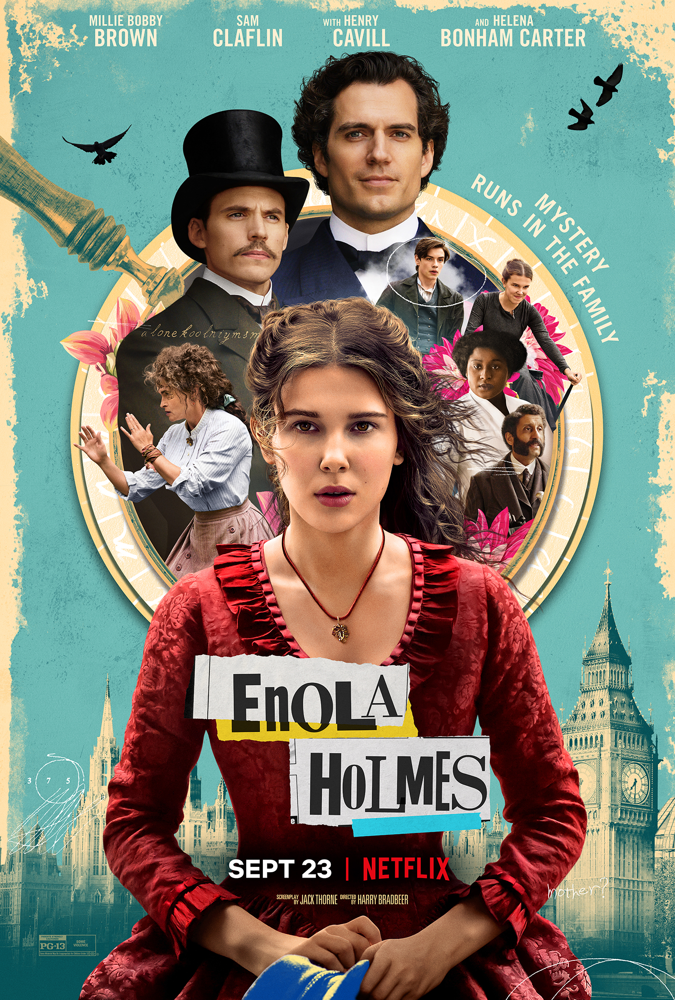

O filme começa com ela explicando um pouco sobre a sua vida, "eu gostaria muito de saber por que minha mãe me deu o nome de Enola, que, de trás para a frente, lê-se alone, que é a palavra inglesa para solitária (...)– Você vai se sair muito bem sozinha, Enola – dizia-me, quase todos os dias enquanto eu crescia. De fato, essa sempre foi sua maneira de dizer adeus inconscientemente." Quando Enola Holmes, irmã do grande detetive Sherlock Holmes, descobre que sua mãe desapareceu, ela rapidamente sai a sua procura. Disfarçando-se de viúva, Enola embarca em uma jornada para Londres, sem saber o que poderá acontecer. Ao chegar na cidade ela adota uma série de disfarces, mas acaba se envolvendo no caso de um jovem marquês desaparecido. Em uma época em que as mulheres eram subestimadas, a solitária adolescente inglesa é ameaçada por vilões que procuravam pelo tal nobre, e, além de ter que fugir desses malfeitores, ela precisa também despistar seus espertos irmãos. Em meio a tantos perigos e mistérios, será que Enola conseguirá descobrir as pistas necessárias para encontrar sua mãe?, Enola se acha no meio de uma conspiração que pode alterar o rumo da história política.
O filme foi uma adaptação do livro "O caso do marquês desaparecido" da autora Nancy Springer;
Produzido por Millie Bobby Brown, Paige Brown, Ali Mendes, Alex Garcia, Mary Parent;
O filme pode ser assistido pela plataforma de streaming Netlix.
Diretor:Harry Bradbeer
Idade:52 anos;
Nascimento:1 de janeiro de 1970;
Nacionalidade:Britânico;
Carreira:23 anos;
Roteirista:Jack Thorne
Idade:43 anos;
Nascimento:6 de dezembro de 1978;
Nacionalidade:Britânico;
Carreira:13 anos;
Topo da página!